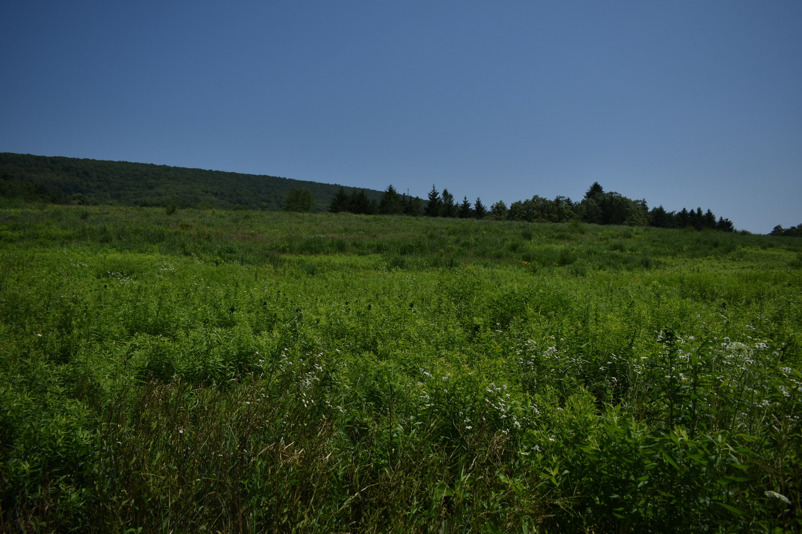

Concept
A 16-acre Grassland occupies the North-East corner of the property. It was installed in 2005 under a 15-year NRCS (Natural Resources Conservation Service) CREP (Conservation Reserve Enhancement Program) contract which was renewed several years ago for an additional 15 years. It includes a 2.5 acre border of cool season grasses, including Orchardgrass, Timothy, Birdsfoot Trefoil, and Ladino Clover. The enclosed 12.8 acre center portion is a warm season grass plot including Big Bluestem, Swithcgrass, Indiangrass, Little Bluestem, and Sideoats Grama, as well as a native wildflower mix. It is an established grassland with good survival of the BlueStems, Switchgrass, and Indiangrass. No signs of the original Sideoats Gramma remain and the cool season grasses compete with invading Goldenrods. Routine maintenance includes partial annual mowing to control woody invasives and to provide a singing ground for the Woodcock that use it during mating season. Mowing also encourages renewed growth and fill-in of establised grasses. We are considering a controlled burn next summer to rejuvenate the area, but no other significant enhancement is anticipated.
Steps
- Select a site
- The segment of the wetland noted above, selected (complete)
- Record it
- Images
- Inventory plant species
- Inventory wildlife (fish, birds, insects) in or using the site
- Base Maps
- Plan
- Species whose numbers could be increased
- Species whose numbes could be decreased
- Species not currently pesent whose introduction could be beneficial
- Define palettes
- Base Maps
- Implement
- Sequence of actions
- Resources needed not currently available
- Timeline
- Assess
- Narrative
- Data
- Notes